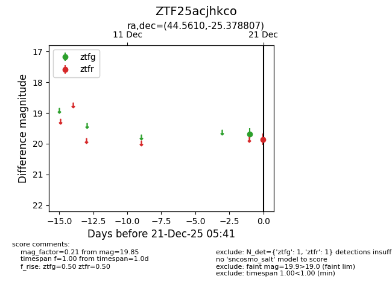
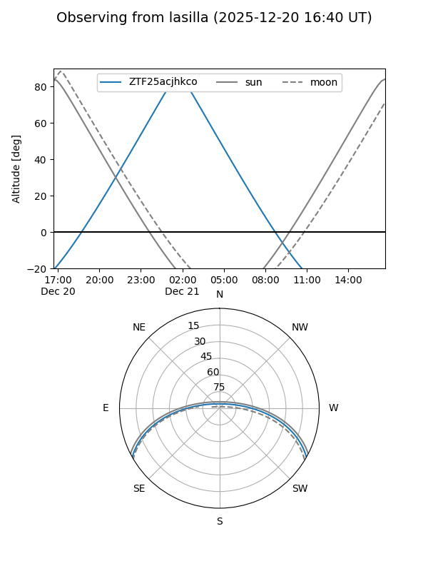
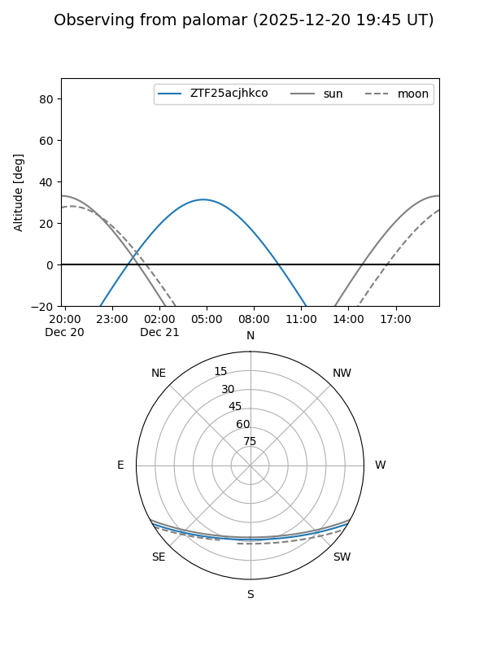

ZTF25acjhkco
Target ZTF25acjhkco at 2025-12-21 05:44
Aliases and brokers:
FINK: fink-portal.org/ZTF25acjhkco
Lasair: lasair-ztf.lsst.ac.uk/objects/ZTF25acjhkco
ALeRCE: alerce.online/object/ZTF25acjhkco
alt names
ZTF25acjhkco (ztf,fink_ztf)
Coordinates:
equatorial (ra, dec) = 44.5610,-25.37881
equatorial (HMS+DMS) = 02:58:14.65,-25:22:43.70
galactic (l, b) = (216.6604,-61.58930)
Flags:
Photometry:
last ztfg=19.69, ztfr=19.85
1 ztfg, 1 ztfr detections
Lightcurve

Visibility


Additional plots